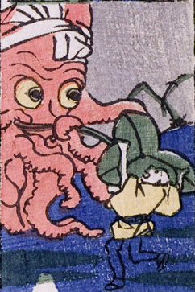

人間の背丈よりも大きい蛸。鉢巻を締め、足には植物を持ち人を襲っている。
著作者：一恵斎芳幾（歌川芳幾）／出典：親書誌：U426_nichibunken_0142：新板化物づくし；シンパンバケモノヅクシ／日付：2009／資源識別子：U426_nichibunken_0142_0010_0000
Copyright (c)2010- International Research Center for Japanese Studies, Kyoto, Japan. All rights reserved.